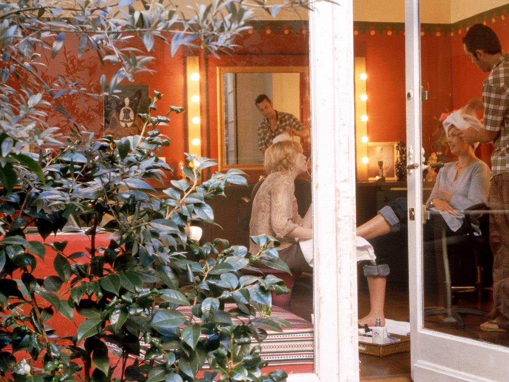

Стрижка
Женская, мужская, модельная. Подберём форму под ваш тип лица и стиль. Не просто «подровнять», а найти ту форму, которая держится и без укладки на каждый день.
- Женская стрижка
- Мужская стрижка
- Модельная стрижка
Женская, мужская и модельная стрижка, окрашивание, полировка волос, причёска и укладка. Гомель, Ирининская 21б.
Женская, мужская, модельная. Подберём форму под ваш тип лица и стиль. Не просто «подровнять», а найти ту форму, которая держится и без укладки на каждый день.

От естественных оттенков до ярких решений. Подберём оттенок под цветотип и стиль. Работаем с качественными материалами, чтобы цвет радовал, а волосы оставались живыми.

Гладкость, блеск и здоровый вид. Полировка делает волосы гладкими и блестящими, убирает ощущение сухости и секущихся кончиков — вид ухоженный без ежедневной укладки.

На каждый день и на важное событие. Укладка на праздник, причёска на торжество или быстрый вариант на каждый день — с объяснением, как повторить это дома.
Как выбираем
Перед работой обсуждаем, что не нравится сейчас и что хочется получить. Смотрим на тип лица, структуру и густоту волос, на то, сколько времени вы готовы уделять укладке.
Так стрижка не превращается в сюрприз: форма держится, отрастает аккуратно и не требует укладки каждый день.

Причёска на важное событие
Вопросы
Да, и по времени, и по технике. Модельная стрижка — это когда форма подбирается индивидуально и может заметно менять образ, а не только длину.
Нет. Полировка даёт гладкость и блеск, убирает ощущение сухости и секущихся кончиков. Если волосам нужна другая процедура, мы об этом скажем.
Да. Укладка и причёска — отдельная услуга: на каждый день, на праздник или на важное событие.
Качественными. Мы не экономим на составах для окрашивания и ухода — от них зависит и цвет, и состояние волос.
Позвоните и опишите волосы — подскажем услугу и время. Ирининская 21б.